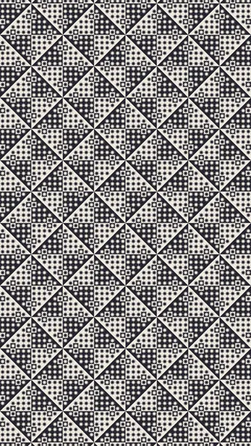
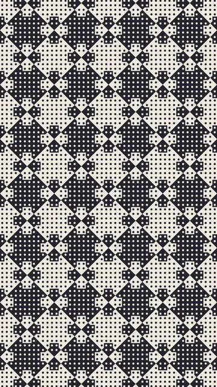
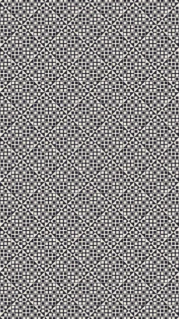
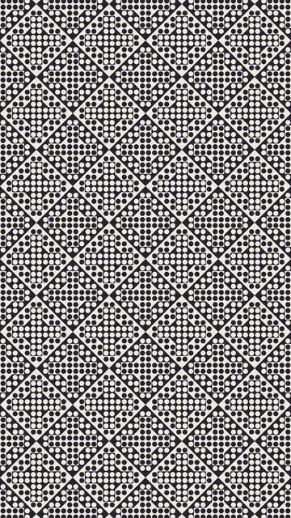
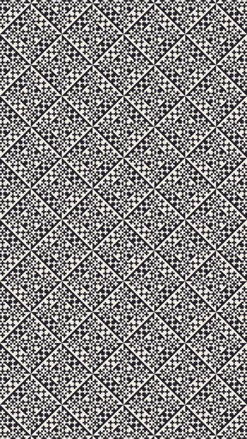
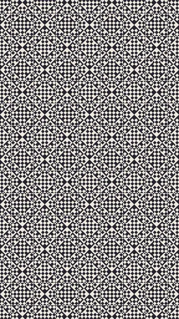
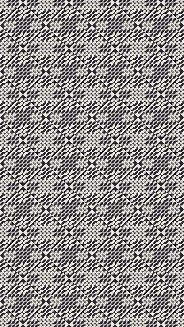
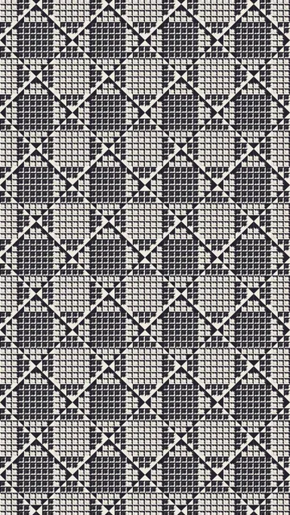
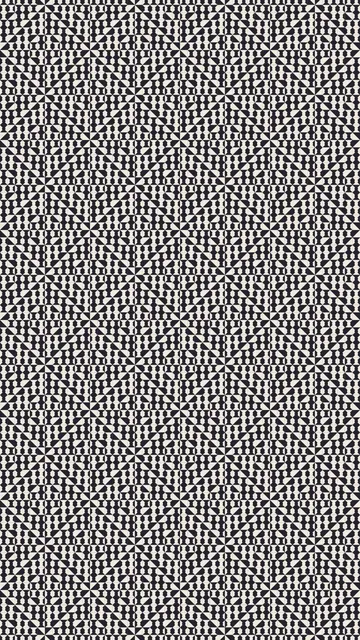
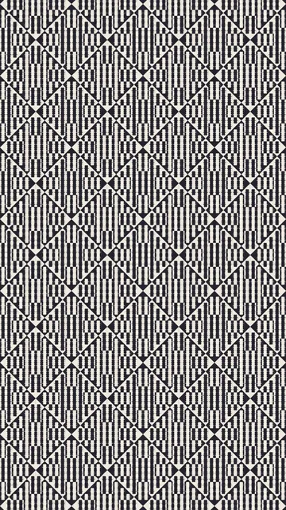

Collection P+E95

Autres langues : English · Español · ไทย · 简体中文 · Русский · Português · हिन्दी
Groupe 6 sur 6 · 10 animations
Une figure posée sur un fond : le glyphe et le fond s'animent ensemble. Rien ne se charge avant un clic, et une seule animation joue à la fois. Vous pouvez prévisualiser chaque animation à une autre vitesse ou dans d'autres couleurs.









